KV Cache Compression in TensorRT LLM#
Table of Contents
Introduction and Motivation#
Agentic workloads change what a serving system has to do. Instead of answering once, an agent works through a job in many steps, and it calls the model again with every tool result. Each call carries the whole conversation so far, so the prompt grows turn by turn while the answer stays short. Figure 1 shows how far production traffic has already moved in this direction: prompts dominate and keep getting longer, the KV cache behind them runs to tens of gigabytes per conversation, almost every prompt is a prefix the system has seen before, and that prefix comes back within minutes. For this workload KV cache compression is critical. Every byte of KV cache saved pays back many times: a smaller cache keeps more turns resident, reuses more prefixes instead of recomputing them, and frees memory for more requests.
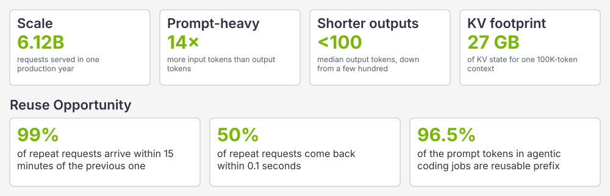
Figure 1: LLM serving today. On a one-year production trace, requests are prompt-heavy, outputs are getting shorter, a single long context carries tens of gigabytes of KV, and almost all reuse arrives within minutes. In agentic coding traces, almost the entire prompt is reusable prefix. Sources: Nixon et al., A Year in LLM Serving (2026) for the first six tiles, and our trace-replay blog for the last one.
Compression itself is not new. TensorRT LLM already stores the active cache in low precision and lets sparse attention skip part of it. Both act inside the forward pass. Yet a KV cache spends most of its life outside the attention kernel: waiting between prefill chunks and decode steps, parked while a tool runs, kept after the request for the next turn, and moved to host or disk memory when the GPU is full. Each of these moments is a chance to compress, and until now no part of the serving stack was in charge of them. This blog introduces a KV cache compression framework that turns these moments into well-defined attachment points and lets any compression method plug into the ones it needs. The cache manager keeps ownership of every page and the attention kernels never see a compressed page, so one framework serves every model and compression can be co-designed with storage, transfer and compute at the system level. Two methods ship on it today:
NVFP4 cold-page compression: keeps attention KV pages in NVFP4 only while they are cold, that is, while they sit in host or disk memory. The conversion runs inside the copy, and the page returns to its original precision when it comes back to the GPU. On an agentic replay with a growing disk tier it completes up to 1.64x the requests with up to 1.9x lower time to first token on the same hardware.
TriAttention: a training-free method that periodically scores the tokens generated so far and evicts the least useful ones between decoding steps once a sequence exceeds its budget. On Qwen3-8B it delivers up to 1.6x the decode throughput at the same batch size and 2.7x the dense peak once the dense cache runs out of memory, with accuracy within noise of dense from an 8k-token budget on.
The next section gives an overview of what ships, followed by the framework design, how each method is built on it, and the evaluation.
Overview of KV Cache Compression in TensorRT LLM#
The general idea is simple: shrink the KV cache at every safe point of the serving workflow, not only inside the forward pass. Figure 2 shows how this fits with the two paths TensorRT LLM already has. Active KV cache quantization sets the data type of the GPU cache and is read and written by every forward step. Sparse attention changes which KV entries attention keeps or reads. The KV cache compression framework covers the rest: it runs at stable boundaries outside the forward pass, between steps or when a page moves between cache tiers, and it works on KV pages across the whole inference system, from the GPU cache at runtime to host and disk storage.
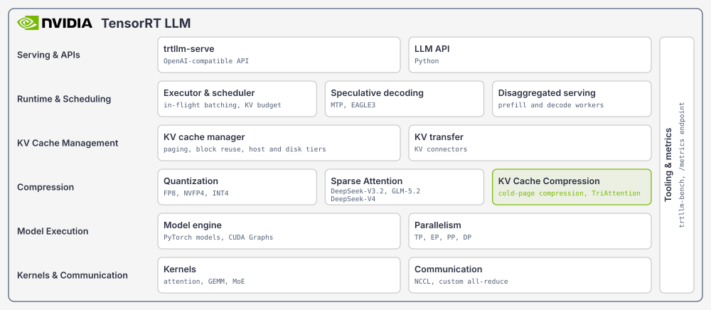
Figure 2: The TensorRT LLM stack. KV cache compression sits in the compression layer next to quantization and sparse attention. It changes what is stored in the KV cache and touches neither the kernels below nor the serving layers above.
To demonstrate the framework’s generality, we have built two methods on it that act at different points in the life of a KV cache:
NVFP4 cold-page compression: stores attention KV pages as NVFP4 while they sit in host or disk memory. A page is encoded on the way out and decoded on the way back, so the GPU cache and the attention kernels keep the model’s normal KV data type.
TriAttention: runs between decode steps. It scores the generated tokens with an importance measure calibrated offline per attention head and keeps only a fixed budget of them. The prompt is never touched.
The two tables below summarize the current coverage.
Method |
When It Runs |
What It Changes |
Supported Attention Types[1] |
|---|---|---|---|
NVFP4 cold-page compression |
When a page moves between the GPU and host or disk memory |
How attention KV is stored while off the GPU |
MHA / MQA / GQA / MLA / hybrid |
TriAttention |
Periodically between decode steps |
Which KV tokens are kept |
MHA / MQA / GQA |
Table 1. The two methods built on the framework: when each one runs, what it changes, and the attention types it supports.
Memory Tier |
NVFP4 Cold-Page Compression |
TriAttention |
|---|---|---|
GPU (active KV) |
Unchanged (FP16 / BF16 / FP8) |
Generated tokens evicted periodically |
Host memory |
NVFP4 |
Not affected |
Disk |
NVFP4 |
Not affected |
Table 2. What each method does to the KV cache in each memory tier.
Note: Currently, this design targets and is optimized for NVIDIA Blackwell GPUs and newer architectures.
The rest of the blog covers the framework design shared by all methods, with cold-page compression as the worked example. The framework landed in #15106 and its runtime integration in #15697. The interface between the cache manager and a page encoder is in the cold-page codec design guide, and the APIs for adding a method are in the KV Cache Compression Development Guide.
KV Cache Compression Framework Design#
Our goals for the framework are two. A user turns a compression method on with one configuration block and nothing else. A developer adds a new method with plain Python and kernels, without touching the runtime. The framework takes care of the rest.
Design Philosophy#
Beyond the forward pass, a serving system offers extra opportunities to compress the KV cache: moments where the KV already exists, nothing is reading it, and a dedicated algorithm can run at exactly that time. Using them well means three things:
Untouched attention: attention reads the KV cache as before.
Seamless insertion: no exposed overhead; the compression kernels hide inside existing steps and nothing else in the runtime changes.
General to models: works on KV pages, not on model-specific operators.
To insert precisely, we define five stages in the life of a KV cache (Figure 3):
Prefill-chunk stage: after each prefill chunk.
After-prefill stage: right after prefill, before the first decode step.
Decode stage: between decode steps (TriAttention).
Tool-call stage: around a tool call, while the request waits.
After-request stage: after the request, KV kept for reuse on GPU, host or disk (cold-page compression).
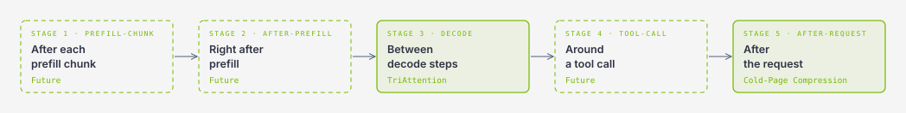
Figure 3: Five stages in the life of a KV cache where compression can run. TriAttention acts at the decode stage (stage 3) and cold-page compression at the after-request stage (stage 5). The dashed stages are in scope and have no method yet.
These stages fall into two groups, and each group has its own integration path. Stages 1 to 3 happen while a request is running, so iteration-driven methods hook into the executor loop at each stage boundary and transform the retained KV before the next step reads it; TriAttention is one. Stages 4 and 5 happen while no request is running: the cache manager holds the KV, keeps it across requests, and moves it between GPU, host and disk memory. For them we define cross-request KV management methods, which run inside the cache manager. A method may use either path or both, and in both the cache manager keeps ownership of every page.
Architecture Overview#
To keep compression simple and straightforward, the whole design breaks down into three parts, shown in Figure 4, without modifying any existing runtime component:
Compression config: one block that selects the method and carries its options; a factory builds the method from it before the model runs.
Compression manager: the class a method inherits. It already sits at every hook in the executor loop and in the cache manager’s page migration; a method overrides the functions for the stages it needs and the compression flow is in place.
Method-specific kernels: a method could bring its own kernels, new algorithms as well as fusions with existing parts of the runtime.
The executor and the KV cache manager are existing components. The framework does not replace them; it meets them at the hooks and leaves scheduling and memory ownership where they are.
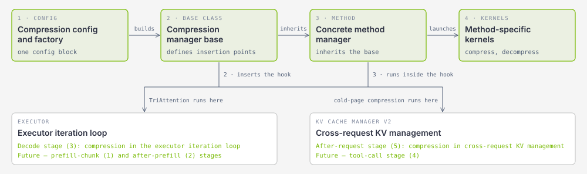
Figure 4: The KV cache compression framework and its execution order. The config builds the manager (1). The manager inserts a hook into the executor and one into the KV cache manager (2). The concrete method inherits the manager and runs inside those hooks (3), launching its own kernels (4). Highlighted boxes are the framework parts; white boxes are existing system components, with the stages each one hosts today and in the future.
In the current implementation, storage-bound compression is the first cross-request mechanism: it acts when a page moves to host or disk memory and defines how the page is stored there. Today TriAttention implements the decode stage (stage 3) and NVFP4 cold-page compression the offload part of the after-request stage (stage 5). The other stages are reachable the same way and will be filled as new methods need them. The rest of this section covers the configuration and the two paths.
Configuration and Setup of KV Cache Compression#
Turning compression on takes one configuration block, and everything
else follows from it: which modules to engage and whether the rest of
the setup allows it. The block, kv_cache_compression_config,
holds:
algorithm: which method to run. One method can be active per LLM instance.Method options: the method’s own parameters, e.g. for TriAttention the token
budget, the eviction period, theeviction_modeand the calibration file.
It works the same in the Python API, in trtllm-serve YAML and
in trtllm-bench; the
full option table is in the KV Cache Compression feature
documentation.
Because compression can happen at many places and stages of TensorRT LLM, initialization has to be deliberate: with the config in hand, the compression manager decides which parts of the runtime to modify and invoke for compression. Before anything is built, a factory reads the block and wires things up: which modules the method engages (the cache manager’s page migration for cold-page compression, the executor loop for TriAttention), whether block reuse and the configured speculative decoding mode stay valid, and whether the platform matches, since some methods target a specific one (e.g. TriAttention currently requires Blackwell or a newer architecture).
An unsupported combination is rejected with a clear message;
otherwise the compression manager is built and bound to KVCacheManagerV2. For
the interfaces, see the KV cache compression development
guide.
KV Cache Compression in the Executor Iteration Loop#
The most important property of the framework is seamless insertion: compression reaches the whole lifecycle of a request inside TensorRT LLM without the runtime learning anything new. This section shows how.
In the TensorRT LLM executor every iteration follows the same cycle.
The scheduler picks a batch of requests; each resource manager prepares
its resources for that batch (prepare_resources);
the model runs one forward pass; each manager updates its state (update_resources);
and a finished request releases its resources (free_resources).
These three callbacks are exactly the moments when nothing is reading
the cache, so the five stages of Figure 3 become hooks here.
KVCacheCompressionManager
inherits BaseResourceManager
and is registered as the last resource manager, so every hook sees the
cache already updated. In prepare_resources it
fires on_request_init for a
request’s first prefill chunk (stage 1) and on_generation_step_begin
(stage 3); in update_resources it
fires on_context_step_end
for the requests whose last prefill chunk just ran (stage 2) and on_generation_step_end
(stage 3); in free_resources it
fires on_request_finish
(stages 4 and 5). Every hook does nothing by default, and a method
overrides the hooks of the stages it wants (Figure 5). The manager owns
no pages, so it never touches admission or memory accounting.
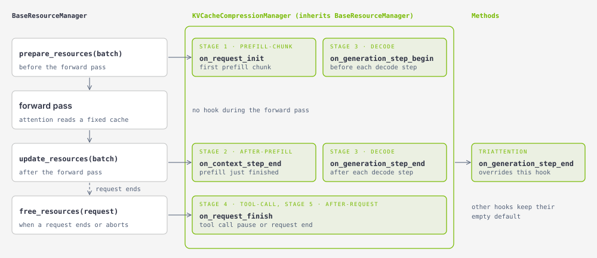
Figure 5: How the hooks reach the executor iteration loop. Every BaseResourceManager receives three callbacks per iteration: before the forward pass, after it, and when a request ends. KVCacheCompressionManager inherits BaseResourceManager and turns the three callbacks into the five hooks. A method overrides the hooks it needs.
Inside a hook a method runs its own kernels on the cache. A shared,
algorithm-neutral compaction kernel packs the kept tokens and returns
the freed pages, so a method only decides what to keep. Two rules: the
keep policy stays separate from the compaction, and GPU work finishes
before any page is shrunk or freed. TriAttention overrides on_generation_step_end,
scores and selects tokens with its own kernels, and calls the shared
compaction.
KV Cache Compression in Cross-Request KV Management#
Once a request pauses or ends, its KV belongs to the cache manager,
so that is where compression plugs in: at the points where pages move.
During a tool call (stage 4 in Figure 3) and after the request (stage
5), KVCacheManagerV2
decides which pages stay on the GPU, move to host or disk memory, are
reused by a later request or transferred to another worker; it does no
compression itself. Every page that is reused skips its prefill
outright, the largest saving a serving system can get, and compression
lets the tiers hold more of these pages. Today the framework covers the
first and busiest of these movements, offload and onboard, with the
storage-bound mechanism.
Compression is more than the algorithm. A page that crosses a storage boundary is already being read, moved and written by the cache manager’s own copy kernels, so a compression method should not add a pass of its own on top. The storage-bound path is built around that: quantization is fused into the offload copy and dequantization into the onboard copy, so compression rides the transfer’s bandwidth instead of competing with it.
How it plugs into KVCacheManagerV2.
KVCacheManagerV2
keeps a hot representation on the GPU, one page spread over several
kernel-facing pools, and a cold representation off the GPU, one
fixed-size block per page, with a codec translating between the two. The
default codec concatenates the pools into the block; NVFP4 cold-page
compression is a codec that produces a smaller one, quantizing on the
way out and dequantizing on the way back inside the same copy. KVCacheManagerV2
calls the codec with batches of pages on its own stream and never looks
inside the block, so it keeps ownership of pools, mappings and migration
while the codec decides how a page is stored while cold. The codec and
its kernels are described in the NVFP4 cold-page compression section
below and in the cold-page codec design guide.
The same fusion could later apply to the other movements on this path: the KV transfer between workers in disaggregated serving and the pause at a tool call.
Algorithm Implementations#
In this section, we walk through the two KV cache compression methods currently implemented in TensorRT LLM, focusing on how each method works and how it integrates with the framework. For a quick-start guide and runnable configurations, please refer to the KV cache compression examples.
NVFP4 Cold-Page Compression#
Introduction#
NVFP4 cold-page compression stores KV cache pages in NVIDIA’s 4-bit NVFP4 format while they sit in host or disk memory, and keeps the model’s normal data type on the GPU. The design starts from one observation: the moment a page leaves the GPU is the best place to compress it. The page is being copied anyway, nothing reads it while it is cold, and only the pages pushed out by memory pressure are touched, so the compression is effectively free and lands exactly where capacity is short. It also happens only under pressure and never on the whole cache, which makes it far friendlier to accuracy than compressing every page on every step. NVFP4 itself is the format TensorRT LLM already uses for weights and for the active KV cache, 4.5 bits per value including scales, so a cold page shrinks to about a quarter of FP16 and half of FP8, and the attention kernels never see the compressed form. To try it, see the NVFP4 cold-page example. Figure 6 compares the three layouts of one KV page. The method was added in #18091.
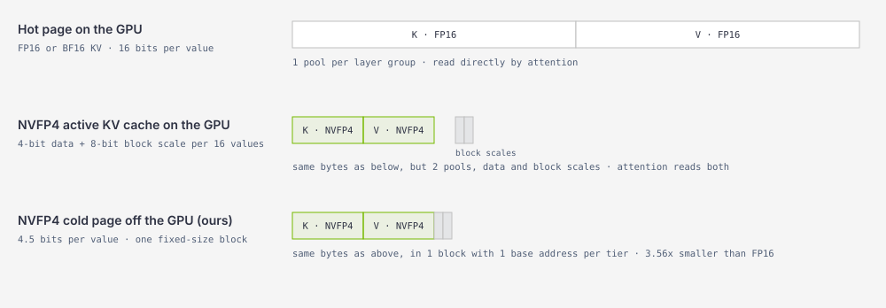
Figure 6: One KV page of one layer, holding K and V for 32 tokens, in three layouts. The hot page on the GPU stores 16 bits per value in one pool. The NVFP4 active KV cache and the NVFP4 cold page hold the same bytes, 4-bit data plus one 8-bit block scale per 16 values. The active cache keeps them in two pools that attention reads together; the cold page packs them into one fixed-size block with one base address.
How It Works in TensorRT LLM#
Within TensorRT LLM, cold-page compression is a compression manager
on the cross-request path, enabled with algorithm: quantization_for_cold_page
and quant: nvfp4. Below we
highlight the fused encode and decode kernels, the single-block
cold-page layout, and the handling of position-encoded values; Figure 7
follows one page out of the GPU and back.
Encode and decode, fused with the copy. When KVCacheManagerV2
offloads a batch of pages, one fused kernel quantizes them and writes
the cold pages straight into the host slots; on the way back its
counterpart dequantizes them into the GPU pool before attention reads
them. The kernels build on the NVFP4 conversion path TensorRT LLM
already uses, so no calibration is needed, and they are shaped like the
cache manager’s own copy kernel, streaming the page through shared
memory and storing directly into host memory, so quantization rides the
transfer instead of adding a pass. Only attention K and V are quantized;
everything else in a page, such as the recurrent state of hybrid layers,
is copied unchanged in the same launch. Target and draft caches are both
covered, so speculative decoding works with the codec enabled.
One block per page. A hot page is spread over
several GPU pools because that is the layout attention reads. A cold
page is read by nobody, so its layout is chosen purely for storage and
transfer: one fixed-size block holding the NVFP4 data, the scales and
the lossless buffers (Figure 6). Host and disk address it as base plus
slot times size, one copy moves a whole page instead of one per buffer,
disk issues one I/O operation per page instead of one per pool, and a
move between host and disk copies the bytes unchanged. This is exactly
the contract KVCacheManagerV2 asks
of a codec, which is what lets it slot in without changing the cache
manager.
The RoPE part of K. The position-encoded (RoPE) part
of each K vector is the most sensitive to quantization, so it is where
compression ratio and accuracy pull against each other. By default we
quantize it like the rest for the best ratio; DeepSeek-V4 follows its
native scheme and stores it as two FP4 components (2FP4), the second
holding the first one’s rounding error, which keeps accuracy at that
ratio (#18783). For users who want to explore
the other side of the trade, skip_rope_quantization: true keeps the RoPE
part at its original precision at a lower ratio (#19391). Validate the choice on your
workload; see the NVFP4 cold-page example.
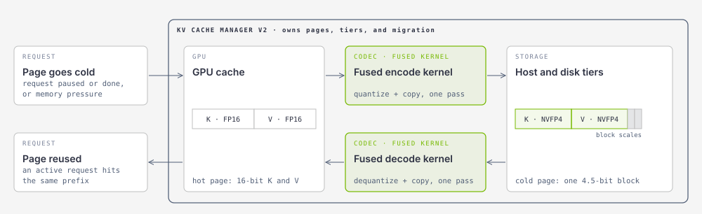
Figure 7: One page leaving and returning to the GPU inside the KV cache manager. A page goes cold when its request pauses or ends, or under memory pressure. A fused kernel quantizes the 16-bit hot page and copies it to the host and disk tiers as one 4.5-bit cold block in a single pass, and a fused decode kernel dequantizes and copies it back when an active request reuses it.
The implementation lives in tensorrt_llm/_torch/kv_cache_compression/quantization_for_cold_page/
(manager and layout policy), cpp/tensorrt_llm/batch_manager/kv_cache_compression/
(native codec) and cpp/tensorrt_llm/kernels/nvfp4ColdPageKernels.cu
(fused encode and decode kernels).
TriAttention#
Introduction#
In a long generation most of the KV cache is generated tokens, and most of them will not matter to the queries still to come. TriAttention (ICML 2026) predicts which ones matter from per-head query statistics collected once offline, and every few tokens evicts the rest and compacts the cache, so decoding reads a shorter cache and more sequences fit on the GPU. Figure 8 shows one round. For details, see the paper.
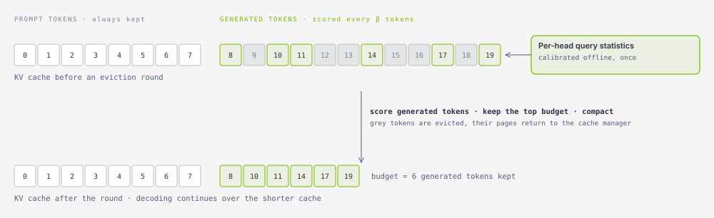
Figure 8: TriAttention keeps the prompt intact and evicts generated tokens. Every β new tokens, the generated tokens are scored with the calibrated query statistics of each head. The `budget` highest-scoring tokens stay, the rest are evicted, and the cache is compacted, so decoding continues over a shorter cache.
How It Works in TensorRT LLM#
Migrating the mechanism to high-performance kernels.
A round scores the generated tokens, selects the keep set, and compacts
the cache (Figure 9). TriAttention was added in #16957, with the batched compaction
kernels of #16836. Each step is implemented with the
best-suited kernel path, CuTe DSL for scoring and selection, native CUDA
for compaction, working on the paged cache in place. A round runs every
beta generated tokens
once a sequence exceeds its budget; the prompt is
never evicted, so block reuse stays valid.
Keeping the extra work off the critical path. These steps are work that attention does not have. The kernels keep the GPU time to a small fraction of a decode step, and the round is driven from the executor’s own callbacks, so no CPU-side overhead is exposed either.
Injection into decoding. A round has to run after a
decode step has written its tokens and before the next step reads the
cache. That is the on_generation_step_end
hook, the only one TriAttention overrides. It is enabled with algorithm: triattention plus
budget, beta, eviction_mode and
calibration_path.
When the hook fires, only the requests that are due run the round in
Figure 9, and a speculative step that confirms several tokens triggers
at most one.
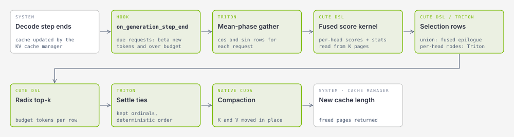
Figure 9: One TriAttention eviction round in TensorRT LLM, one box per kernel. The generation-end hook picks the due requests; a Triton kernel gathers the mean-phase rows; the fused CuTe DSL kernel scores every generated token from the K pages; the selection rows are produced in the same kernel for `union` mode and by a Triton reduction for the per-head modes; a CuTe DSL radix top-k and a Triton tie-settling pass choose the kept tokens; a native CUDA kernel compacts K and V; and the cache manager takes the new length and the freed pages.
For calibration, configuration and current requirements, see the TriAttention example.
Evaluation#
This section consolidates performance and accuracy results for the KV cache compression methods supported in TensorRT LLM. Every comparison is against TensorRT LLM’s own uncompressed configuration on the same hardware, software build, and serving configuration; only the compression setting differs.
NVFP4 Cold-Page Compression#
Unless otherwise specified, the experiments below use GB300 GPUs, the
paged KV cache manager, and block reuse enabled. Before any result was
accepted we confirmed that pages were actually compressed during the
measured window, using the offload and onboard byte counters on the
/metrics endpoint and
an Nsight Systems trace.
Performance#
The NVFP4 format alone brings a large reduction: a cold page costs 0.5625 bytes per value against 2 for FP16 or BF16 and 1 for FP8. Figure 10 compares the measured size of one attention KV page off the GPU with its uncompressed baseline for four models; the recurrent-state buffers of hybrid models are stored as they are and do not shrink.
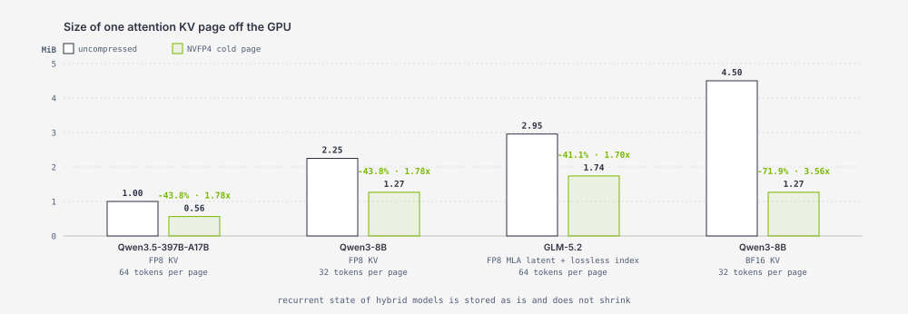
Figure 10: Measured size, in MiB, of one attention KV page off the GPU, uncompressed and as an NVFP4 cold page. A page holds 64 tokens for Qwen3.5-397B-A17B and GLM-5.2 and 32 tokens for Qwen3-8B. FP8 pages shrink by 43.75%, BF16 pages by 71.9%; the GLM-5.2 MLA page shrinks a little less because its index buffer stays lossless.
A smaller cold page means more capacity in the host and disk tiers, and therefore a higher prefix-cache hit rate when the working set does not fit. To show what that buys in practice, we take a large model on a complex agentic workload, GLM-5.2 serving AgentX traces across many GPU counts and concurrencies, and compare the serving Pareto frontier with and without NVFP4 cold pages; we then look at where the gain comes from.
Put together, compression and the cold-page mechanism move the serving frontier for agentic workloads. Figure 11 takes the ten highest-throughput points of the GLM-5.2 frontier with NVFP4 cold pages and shows, for each, the run of that serving point with an uncompressed FP8 host cache. The gain is largest where the FP8 tier misses most, up to 84% more throughput per GPU and 4x the P90 interactivity, and fades to nothing where it already reads most prefixes; averaged over the ten points it is +21% throughput and +92% interactivity.
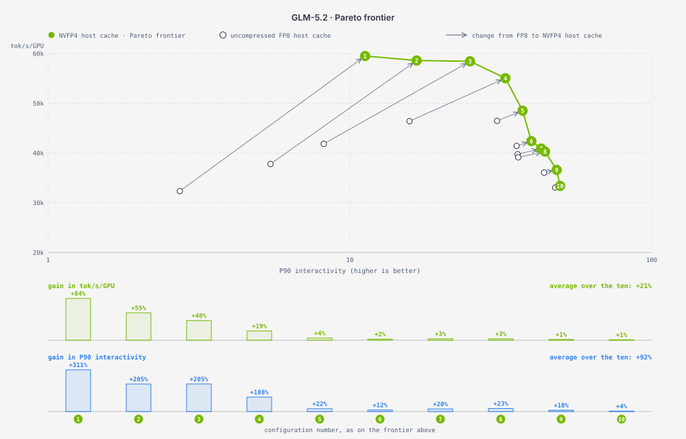
Figure 11: GLM-5.2 Pareto frontier · GB300 · 128 GiB of host cache per prefill rank · the ten highest-throughput NVFP4 points and the FP8 host-cache run of each. Top: each green numbered point is a serving point with NVFP4 cold pages, the hollow point is its run with an uncompressed FP8 host cache, and the arrow shows the change. Bottom: the gain of each numbered configuration in tok/s/GPU (green) and in P90 interactivity (blue). Two repeats per setting; AgentX replay.
The gain is not tied to one setup. Figure 12 details the four configurations with the largest gains, across two models (GLM-5.2 and Qwen3.5-397B-A17B), from 8 to 40 GPUs, and from concurrency 128 to 1536: in every one both the hit rate and the TTFT improve. The improvement comes from two sources, not one: the smaller cold page lets the tiers hold more prefixes, so the hit rate rises, and it also means fewer bytes to move, so offloading and onboarding themselves get faster.
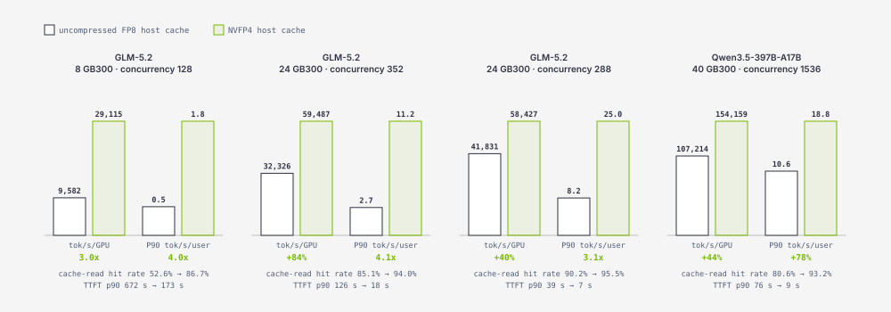
Figure 12: The four serving configurations with the largest NVFP4 gains · AgentX replay. Each panel is one serving point run with an uncompressed FP8 host cache and with an NVFP4 host cache, two or three repeats per setting; bars are throughput per GPU and P90 interactivity, with the cache-read hit rate and P90 TTFT below.
Where the Gain Comes From#
The frontier gains above come mostly from a higher hit rate, but the benefit does not stop when the hit rate saturates. There are two cases.
The hit rate rises. When the host tier cannot hold the working set, a smaller cold page means more prefixes are still there when the next turn arrives. In the configurations of Figure 12 the hit rate rises by 5 to 34 points. The effect is clearest in a GPU-limited deployment (Figure 13), where the uncompressed tier reads barely half of the prefixes: at every disk-tier size NVFP4 hits more, completes more and answers sooner, peaking at 64% more requests completed and 48% lower TTFT.
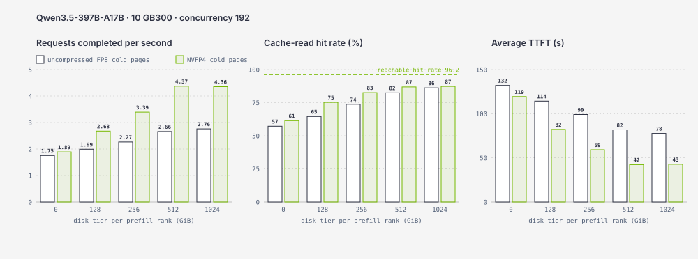
Figure 13: Qwen3.5-397B-A17B · ten GB300s · concurrency 192 · growing disk tier. NVFP4 completes more requests, hits more, and answers sooner at every disk size.
The hit rate is saturated, and the hits move from disk to host. Even when the hit rate cannot rise further, cold pages still pay: a hit served from disk costs far more than one served from host memory, and a hit rate alone does not tell them apart. TensorRT LLM now counts every hit by the tier that served it (#18583). Figure 14 shows two cases on one GB300 node with the GPU cache capped: the hit rate barely changes, but the share of hits served from disk falls from 31% to 19% for GLM-5.2 and from 14% to 0% for Qwen3.5-397B-A17B, tail TTFT roughly halves, and 40% to 50% more requests complete in the same window. The same host memory holds more pages, so less disk is used and the prefixes come back faster.
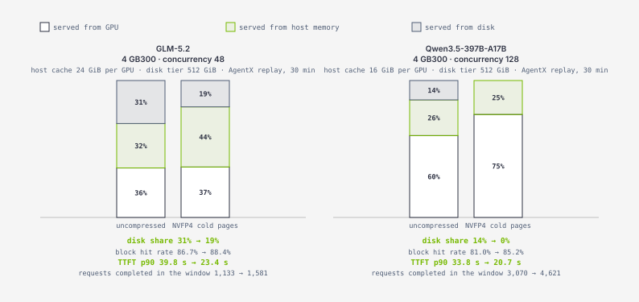
Figure 14: GLM-5.2 · 4 GB300 · concurrency 48 (left) and Qwen3.5-397B-A17B · 4 GB300 · concurrency 128 (right) · where reuse hits are served from. Each bar splits the full-block hits of a 30-minute AgentX replay by tier. The hit rate is similar in both settings of each pair; with NVFP4 cold pages fewer hits are served from disk, the tail TTFT falls, and more requests complete in the window. GPU cache capped at 50% (GLM-5.2) and 35% (Qwen3.5) of free GPU memory.
Accuracy#
A page is quantized only when it leaves the GPU, so the accuracy question is whether repeated quantize-dequantize (QDQ) round trips accumulate error as a page is offloaded and brought back again and again. They do not. Figure 15 measures every representable FP8, FP16 and BF16 value through up to four round trips: the distance to the original value is the one-time quantization error and stays the same after every trip, and the distance to the previous trip is zero from the second trip on. End to end, Qwen3-8B on AIME24 and AIME25 reproduces every output of the first round trip on the second.
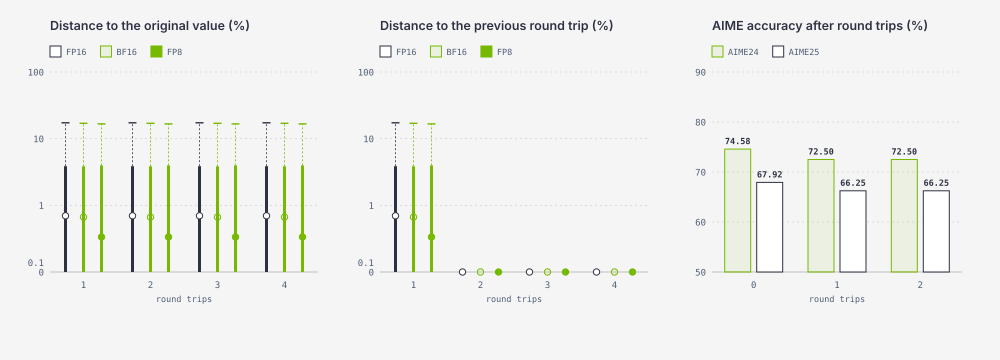
Figure 15: NVFP4 round trips do not accumulate error. Left: distance to the original value after 1 to 4 round trips, for every FP8, FP16 and BF16 value; it is the quantization error and does not change with the number of round trips. Middle: distance to the previous round trip; from the second round trip on it is zero. Right: Qwen3-8B accuracy on AIME24 and AIME25 after 0, 1 and 2 round trips; the second round trip reproduces every output of the first.
End to end, on a large model, hard reasoning tasks, and with very different shares of pages offloaded, accuracy is indistinguishable from the uncompressed baseline. Figure 16 shows Qwen3.5-397B-A17B with and without NVFP4 cold pages: AIME25 stays at 90.0% when 28% of the reused pages are compressed and 90.2% when 61% are, and MATH-500 stays within 0.4 points whether 9% or 23% of the pages are compressed.
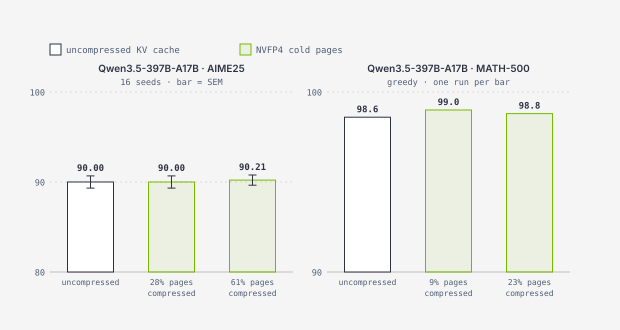
Figure 16: Qwen3.5-397B-A17B accuracy with and without NVFP4 cold pages on AIME25 (16 seeds, error bar is the standard error) and MATH-500 (greedy). Labels give the share of reused pages that had been compressed before scoring.
TriAttention#
Performance#
TriAttention helps in two ways: decoding reads a shorter cache at the same batch size, and more sequences fit on the GPU. Figure 17 shows both on Qwen3-8B on one B200 with 1,024 input and 16,384 output tokens per request. At batch size 32 the compacted cache decodes 27% to 60% faster than dense, depending on the budget. Where the dense cache runs out of memory at batch size 64, TriAttention keeps scaling to batch size 128 and reaches 2.7x the dense peak throughput on the same GPU.
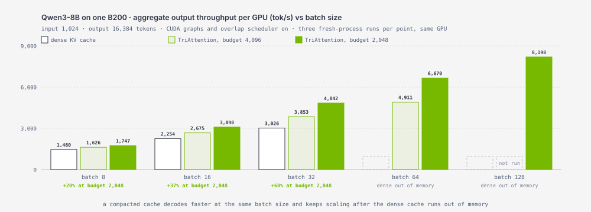
Figure 17: TriAttention on Qwen3-8B, one B200, 1,024 input and 16,384 output tokens. Output throughput per GPU against batch size for the dense KV cache and for TriAttention with budgets of 4,096 and 2,048 tokens. The dense cache runs out of memory at batch size 64; TriAttention continues to batch size 128.
Accuracy#
Eviction is lossy by design, and the budget sets the trade. Figure 18 shows AIME25 accuracy against the decode KV budget for Qwen3-8B and GPT-OSS-120B. From 8,192 tokens on, accuracy is within noise of dense on both models while the decode KV still shrinks 2 to 4x; at 4,096 tokens, the budget behind the throughput results above, the drop is about 5 points for a 7.9x smaller decode KV. The budget is therefore a dial: a known amount of accuracy for a known amount of capacity.
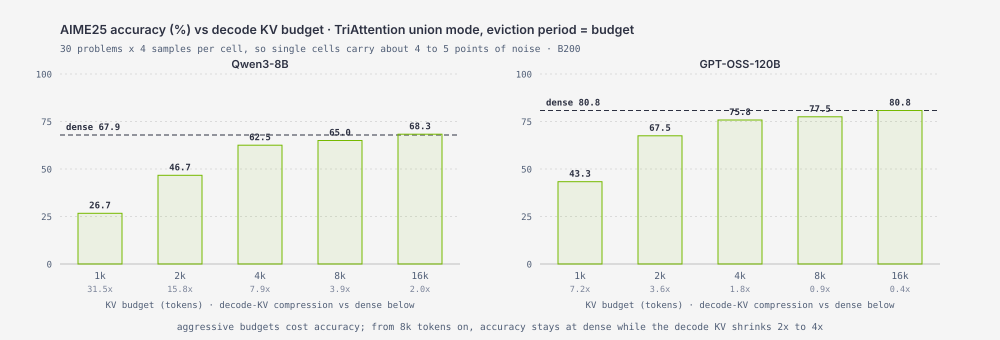
Figure 18: AIME25 accuracy against the decode KV budget for TriAttention on Qwen3-8B (left) and GPT-OSS-120B (right); the dashed line is the dense cache, the label under each bar is the decode-KV compression at that budget.
For configuration, the calibration workflow, and validated modes, please refer to the TriAttention example.
Summary and Future Work#
Current State#
The KV cache compression framework, NVFP4 cold-page compression, and TriAttention are in TensorRT LLM today and ready to use. Both methods are turned on with one configuration block and work with the mainstream model families; the tested list is in the KV Cache Compression feature documentation, and runnable configurations are in the examples. The framework is ready to extend: a new method inherits the manager base, plugs into the stages it needs, and brings its own kernels, without changes to the attention kernels, the cache manager, or the serving loop.
Future Work#
The framework is built to grow. We will keep adding compression techniques for the new era of long-context, reasoning and agentic workloads, as the workload and the hardware evolve.
The goals do not change: better use of GPU memory and bandwidth, higher throughput and lower latency, and accuracy that holds on real tasks. New methods will land through the same framework, with the same one-block configuration and no changes to the attention kernels, the cache manager or the serving loop.
References#
W. Nixon, J. Durbin, F. Standhartinger, H. S. Gunawi, and J. Yang. A Year in LLM Serving: Workload Evolution, Caching and Load-Balancing. arXiv:2608.13573, 2026.
W. Mao et al. TriAttention. ICML 2026. arXiv:2604.04921.
RocketKV: Accelerating Long-Context LLM Inference via Two-Stage KV Cache Compression. ICML 2025. arXiv:2502.14051.
TensorRT LLM, KV Cache Compression feature documentation and examples.
MHA: multi-head attention. MQA: multi-query attention. GQA: grouped-query attention. MLA: multi-head latent attention. For hybrid models, only the KV of the attention layers is compressed.